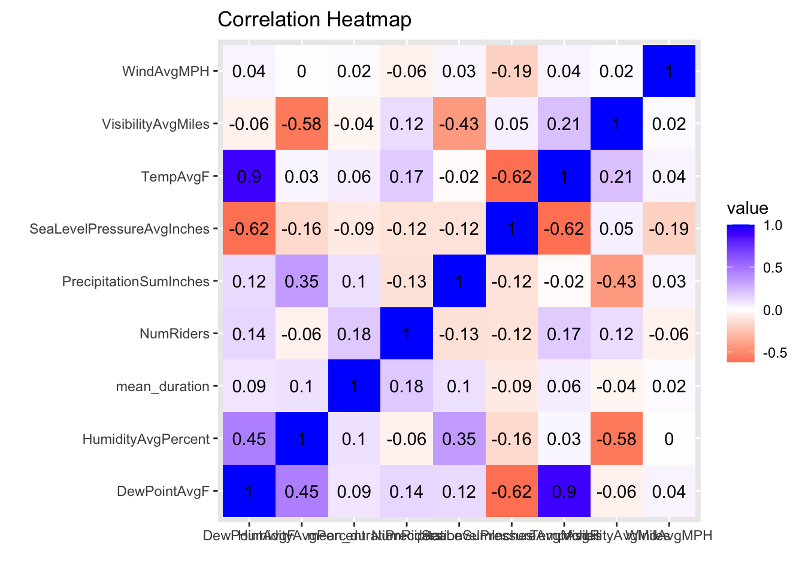
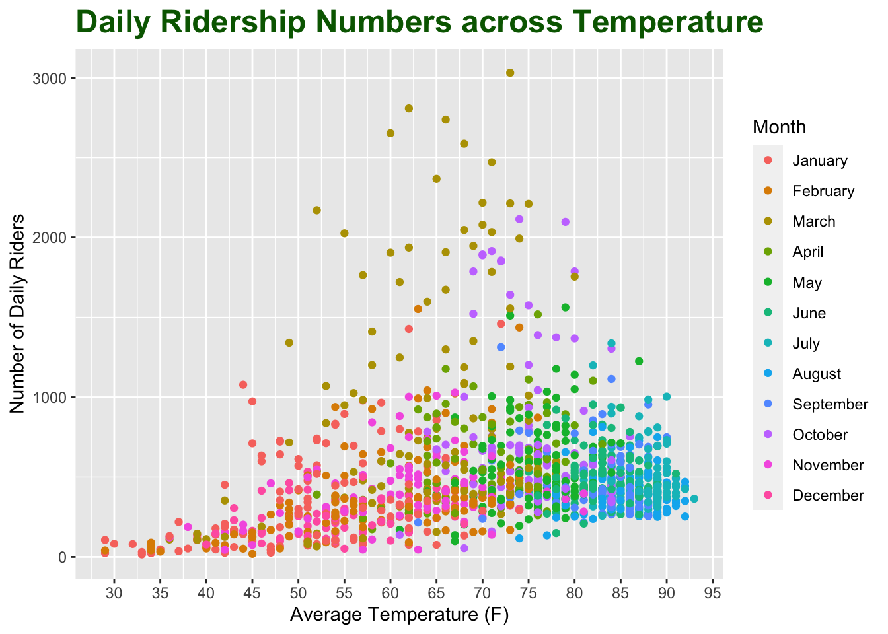
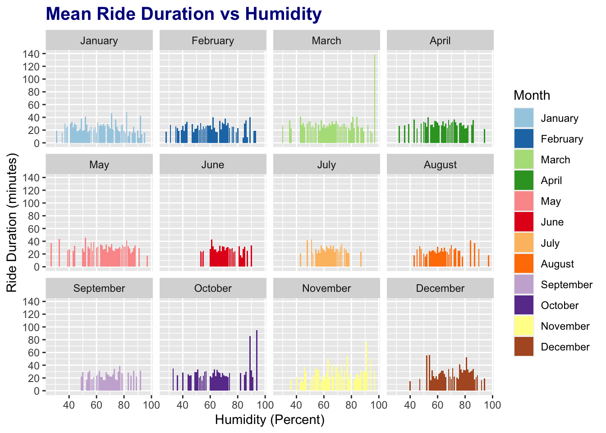
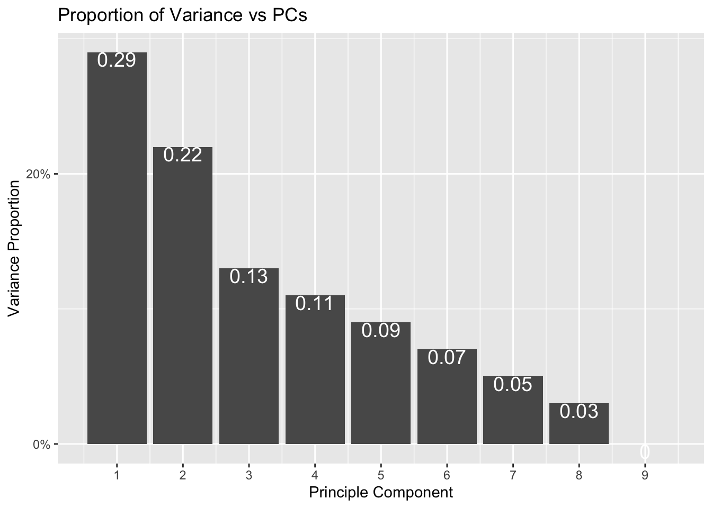
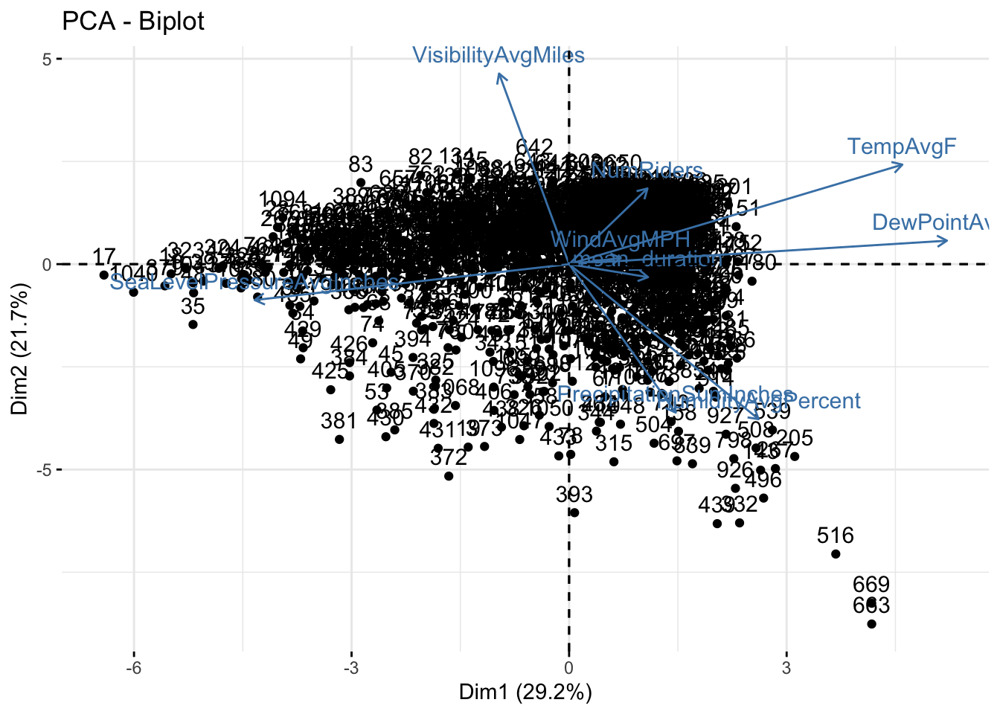

The datasets chosen for this project include Austin TX weather data sourced from WeatherUnderground.com, and Austin bike share trips sourced from the City of Austin. Both datasets were obtained from kaggle.com. I chose these datasets because I am familiar with them from a prior UT Austin DataHack competition, and the information and results are relevant to me as an Austin resident who uses the bicycle share program. Both of the datasets contain entries from December 21st, 2013 to July 31st, 2017. The relevant variables from the weather dataset include Date, average temperature, dew point, humidity, air pressure, visibility, wind speed, and precipitation. The relevant variables from the bike share dataset include Date, ride start time, and duration. I used the existing data to create an additional categorical variable for Month and numeric variable for monthly ridership. My aim is to identify relationships and associations between various weather phenomena and the number and duration of rides. For example, I expect a positive relationship between average temperature and number of riders because a higher temperature would indicates good weather for biking. I also expect that higher humidity levels would result in a decrease in ride duration as longer rides would be unpleasant.
In this cleanup stage, I modified the Date field to the R native Date format, selected the specific variables I want to keep from each dataset, and added month as a factor variable.
weather <- read.csv(file = "austin_weather.csv")
bikes <- read.csv(file = "austin_bikeshare_trips.csv")
bikes <- bikes %>% mutate(Date = as.Date(word(start_time, 1), "%Y-%m-%d"))
bikes <- select(bikes, c(duration_minutes, Date))
weather <- weather %>% select(Date, TempAvgF, DewPointAvgF, HumidityAvgPercent, SeaLevelPressureAvgInches, VisibilityAvgMiles, WindAvgMPH, PrecipitationSumInches)
weather <- weather %>% separate(Date, c("year", "month", "day"), sep = "-", remove = FALSE) %>% select(-"day", -"year") %>% mutate(month = as.factor(month.name[as.numeric(month)]))
weather$month <- factor(weather$month, levels = month.name)
weather <- weather %>% mutate(Date = as.Date(Date, "%Y-%m-%d"))The datasets were joined on the common variable of Date. I first used a set operation to ensure that there are no bike share entries that without a corresponding entry in the weather dataset. Then the 2 were joined with left_join to ensure that the final dataset contains entries (days) where there was zero ridership. The weather datatset has 1319 rows (accounting for about 3 years and 7 months of data) and the bike share dataset has 649231 rows (with unique dates corresponding to about 3 years and 5 months of data). The final joined dataset has 649293 rows, indicating there are 62 days without any bike share users. There were no entries dropped thorugh the join operation. Following this operation, I did final data cleaning steps including changing variables that were imported as factors to the numerical type and removing rows with na. The PrecipitationSumInches variable contains “T” to indicate trace amount of rain, so I recoded instanced of “T” to 0 in order to consider the variable as numeric.
setdiff(bikes$Date, weather$Date)## numeric(0)length(unique(bikes$Date))## [1] 1257length(unique(weather$Date))## [1] 1319bikeData <- left_join(weather, bikes, by="Date")
bikeData$PrecipitationSumInches[bikeData$PrecipitationSumInches=="T"] <- "0"
bikeData$PrecipitationSumInches <- droplevels(bikeData$PrecipitationSumInches)
bikeData$PrecipitationSumInches <- as.numeric(levels(bikeData$PrecipitationSumInches))[bikeData$PrecipitationSumInches]
bikeData$DewPointAvgF <- as.numeric(levels(bikeData$DewPointAvgF))[bikeData$DewPointAvgF]
bikeData$HumidityAvgPercent <- as.numeric(levels(bikeData$HumidityAvgPercent))[bikeData$HumidityAvgPercent]
bikeData$SeaLevelPressureAvgInches <- as.numeric(levels(bikeData$SeaLevelPressureAvgInches))[bikeData$SeaLevelPressureAvgInches]
bikeData$VisibilityAvgMiles <- as.numeric(levels(bikeData$VisibilityAvgMiles))[bikeData$VisibilityAvgMiles]
bikeData$WindAvgMPH <- as.numeric(levels(bikeData$WindAvgMPH))[bikeData$WindAvgMPH]
bikeData <- na.omit(bikeData)This section contains summary statistics about several of the numerical variables in the final dataset. Prior to calculating summary statistics, a final data cleanup step was necesary. The dataset originally contained multiple entries per day, with an entry for each ride taken. I collapsed these by transforming the duration column to contain each day’s average duration, and used distinct() to ensure only one entry per day. Additionally, I used the mutate function to create the NumRiders variable to identify the number of riders for each day. This was done after joining because it involves the creation of additional variables for summary statistics.
bikeData <- bikeData %>% group_by(Date) %>% mutate(NumRiders = n())
bikeData <- bikeData %>% group_by(Date) %>% mutate(mean_duration = mean(duration_minutes)) %>% select(-duration_minutes) %>% distinct
bikeData %>% group_by(month) %>% summarise(mean(NumRiders)) %>%
kable(col.names = c("Month", "Mean Riders"))## `summarise()` ungrouping output (override with `.groups` argument)| Month | Mean Riders |
|---|---|
| January | 350.1721 |
| February | 371.9646 |
| March | 903.2419 |
| April | 593.5444 |
| May | 561.0645 |
| June | 501.9914 |
| July | 495.8211 |
| August | 414.4719 |
| September | 474.1023 |
| October | 751.8817 |
| November | 413.1333 |
| December | 257.3562 |
bikeData %>% filter(month == "June" || month == "July" || month == "August") %>% group_by(month) %>% summarize(n = n(), min = min(TempAvgF), max = max(TempAvgF), mean = mean(TempAvgF), sd = sd(TempAvgF))%>% pivot_longer(cols=-c(1:1), names_to = "stats", values_to = "val") %>% kable(col.names = c("Month","Stat", "Avg Temp"))## `summarise()` ungrouping output (override with `.groups` argument)| Month | Stat | Avg Temp |
|---|---|---|
| June | n | 116.000000 |
| June | min | 75.000000 |
| June | max | 91.000000 |
| June | mean | 82.836207 |
| June | sd | 3.270272 |
| July | n | 123.000000 |
| July | min | 75.000000 |
| July | max | 93.000000 |
| July | mean | 86.951219 |
| July | sd | 2.848220 |
| August | n | 89.000000 |
| August | min | 74.000000 |
| August | max | 92.000000 |
| August | mean | 86.438202 |
| August | sd | 3.846353 |
bikeData %>% filter(PrecipitationSumInches > 0) %>% ungroup() %>% select(-Date, -month) %>% group_by(TempAvgF) %>% summarise(Mean_Duration = mean(mean_duration), MinDuration = min(mean_duration), MaxDuration = max(mean_duration)) %>% arrange(desc(TempAvgF)) %>% filter(row_number() %% 5 == 1) %>% kable()## `summarise()` ungrouping output (override with `.groups` argument)| TempAvgF | Mean_Duration | MinDuration | MaxDuration |
|---|---|---|---|
| 90 | 40.10074 | 38.82933 | 41.37215 |
| 85 | 25.53636 | 22.79401 | 28.27872 |
| 80 | 28.45081 | 17.36364 | 45.98416 |
| 75 | 30.83855 | 20.69068 | 42.36762 |
| 70 | 34.16960 | 22.41841 | 43.91162 |
| 65 | 31.36822 | 15.23684 | 41.54089 |
| 60 | 31.35744 | 22.54337 | 43.58700 |
| 55 | 26.87168 | 26.30105 | 27.44231 |
| 50 | 14.52318 | 14.52318 | 14.52318 |
| 43 | 20.80782 | 20.80782 | 20.80782 |
| 37 | 48.86111 | 48.86111 | 48.86111 |
bikeData %>% ungroup() %>% select(-Date, -month) %>% summarize_all(.funs = mean) %>% pivot_longer(cols=everything(), names_to = "Numeric Variable", values_to = "Overall Mean") %>% kable()| Numeric Variable | Overall Mean |
|---|---|
| TempAvgF | 70.9365462 |
| DewPointAvgF | 56.9341365 |
| HumidityAvgPercent | 66.5333333 |
| SeaLevelPressureAvgInches | 30.0209076 |
| VisibilityAvgMiles | 9.1863454 |
| WindAvgMPH | 5.0040161 |
| PrecipitationSumInches | 0.1132771 |
| NumRiders | 516.8401606 |
| mean_duration | 27.6646864 |
The first table illustrates the average monthly ridership numbers from December 2013 to July 2017. The months with the highest average ridership numbers are March and October, which may indicate that users prefer to ride in the Fall and Spring. The second table illustrates minimum, maximum, mean, and standard deviation values for the Average Temperatures of the summer months (June, July, and August). Based on this data, we can see that all thre months have very similar temperature data generally within 1 degree of each other. Across the summer months on average, min temp is 75 degrees, max temp is 92 degrees, mean temp is 84 degrees, and standard deviation was 3 degrees. There are significantly more June and July observations compared to August ones. pivot_longer was used to put the individual summary statistics from their own seperate columns into a single column for easier readability and comparison. The third table identifies mean, min, and max values for the average daily trip duration on days with precipitation and sorts them according to temperature. In general, we can see identify a positive correlation with temperature and mean duration, indicating that users prefer hotter temperatures on days with precipitation. The hottest temperature of 90 degrees F has an average daily duration of 40 minutes, compared to an average daily duration of 20 minutes at 43 degrees F. The min and max values of duration in general share a similar trend. The final table identifies the overall mean across all numerical variables without grouping by any categorical variable. In summary, there is an average temperature and dewpoint of 71 and 57 degrees, humidity of 67 percent, sea sevel pressure of 30 inches, visibility of 9 miles, windpeed of 5 mph, precipitation of 0.1 inches, number of riders of 516, and duration of 28 minutes across the entire dataset.
bikeData%>%ungroup()%>%select(-Date, -month)%>%
cor%>%as.data.frame%>%
rownames_to_column%>%pivot_longer(-1)%>%
ggplot(aes(rowname,name,fill=value))+geom_tile()+
geom_text(aes(label=round(value,2)))+
xlab("")+ylab("")+coord_fixed()+
scale_fill_gradient2(low="red",mid="white",high="blue") +
ggtitle("Correlation Heatmap")
According to the correlation heatmap, there does not appear to be any strong positive correlations between numeric variables. The strongest positive correlations include that between Humidity Percent and Dew Point at 0.45. In contrast, we can identify strong negative correlations between Sea Level Pressure and Dew Point, Humidity and Visibilty, Temperature and Sea Level Pressure, and Visibilty and Precipitation. The majority of these make intuitive sense because these weather phenomena affect each other. For instance, high humidity indicates a fog that would lower visibility, and high air pressure is associated with a lower temperature and dew point. The remaining relationships exhibit little to no correlation.
bikeData %>% ggplot(aes(TempAvgF, NumRiders, color=month)) + geom_point()+
labs(title = "Daily Ridership Numbers across Temperature", x = "Average Temperature (F)", y = "Number of Daily Riders", color = "Month") +
scale_x_continuous(breaks=seq(0,95,5)) +
theme(plot.title = element_text(size = 18, face = "bold", color = "darkgreen"))
This scatterplot depicts the effect of average temperature on daily ridership. Each point represents a day, with x and y position determining temperature and ridership respectively and color determining month. High ridership numbers of around 2500 as evidenced by points at the top of the plot fall under the temperature ranges of 60 to 75 degrees F. Based on the coloring, this coincides with the early spring months of February and March. Additionally, we can identify the Fall month of October that has fairly high ridership numbers of around 1500 across a temperature range fo 65 degrees to 80 degrees F; this can be seen in points at the middle height of the plot. In general, there appears to be a bell curve akin to a normal distribution where extremely low and extremely high temperatures results in low ridership numbers with a spike in ridership approaching a peak at 70 degrees F.
glimpse(bikeData)## Rows: 1,245
## Columns: 11
## Groups: Date [1,245]
## $ Date <date> 2013-12-21, 2013-12-22, 2013-12-23, 2013-1…
## $ month <fct> December, December, December, December, Dec…
## $ TempAvgF <int> 60, 48, 45, 46, 50, 48, 53, 51, 50, 40, 46,…
## $ DewPointAvgF <dbl> 49, 36, 27, 28, 40, 36, 39, 39, 41, 26, 28,…
## $ HumidityAvgPercent <dbl> 75, 68, 52, 56, 71, 63, 65, 64, 76, 60, 54,…
## $ SeaLevelPressureAvgInches <dbl> 29.68, 30.13, 30.49, 30.45, 30.33, 30.40, 3…
## $ VisibilityAvgMiles <dbl> 7, 10, 10, 10, 10, 9, 9, 10, 10, 10, 10, 10…
## $ WindAvgMPH <dbl> 4, 6, 3, 4, 2, 3, 1, 2, 5, 5, 1, 4, 8, 4, 7…
## $ PrecipitationSumInches <dbl> 0.46, 0.00, 0.00, 0.00, 0.00, 0.00, 0.00, 0…
## $ NumRiders <int> 103, 117, 96, 85, 145, 100, 115, 194, 255, …
## $ mean_duration <dbl> 29.13592, 40.46154, 55.60417, 31.96471, 49.…ggplot(bikeData, aes(x = HumidityAvgPercent, y = mean_duration, fill = month))+
geom_bar(position = "dodge", stat='summary', fun.y = mean)+
facet_wrap(bikeData$month) +
theme(plot.title = element_text(size = 15, face = "bold", color = "darkblue")) +
labs(title = "Mean Ride Duration vs Humidity", x = "Humidity (Percent)", y = "Ride Duration (minutes)", fill = "Month") +
scale_y_continuous(breaks=seq(0,150,20)) +
scale_fill_brewer(palette="Paired")## Warning: Ignoring unknown parameters: fun.y## No summary function supplied, defaulting to `mean_se()`
## No summary function supplied, defaulting to `mean_se()`
## No summary function supplied, defaulting to `mean_se()`
## No summary function supplied, defaulting to `mean_se()`
## No summary function supplied, defaulting to `mean_se()`
## No summary function supplied, defaulting to `mean_se()`
## No summary function supplied, defaulting to `mean_se()`
## No summary function supplied, defaulting to `mean_se()`
## No summary function supplied, defaulting to `mean_se()`
## No summary function supplied, defaulting to `mean_se()`
## No summary function supplied, defaulting to `mean_se()`
## No summary function supplied, defaulting to `mean_se()`
This barplot depicts the effect of humidity on average rider duration, faceted by months of the year. Unlike what I was expecting, there does not appear to be any relationship at all between humidity and ride duration, even when separating by months that may have different humidities. I had predicted that increased humidity would make it unpleasant to be outside and thus result in shorted ride durations. At first this does appear to be the case in June and July, but it is likely that these months simply do not get to high humidity levels compared to others, so there is no data at these higher percentages. Additionaly, there is no taper or gradual decline in ride duration which supports this theory. There are outliers in the months of Mach and October, where a large spike in average ride duration occurs at high humidity levels. However, because the summary statistics section illustrated that the months of March and October in general have approximately double the amount of riders per day compared to other months, it is likely the case that humidity does not play a role in ride duration and another unknown factor is responsible.
preparedData <- bikeData%>%ungroup()%>%select(-Date, -month)
nums <- preparedData%>% select_if(is.numeric) %>% scale
bikepca <- princomp(nums)
summary(bikepca, loadings=T)## Importance of components:
## Comp.1 Comp.2 Comp.3 Comp.4 Comp.5
## Standard deviation 1.620510 1.3967185 1.0694014 1.0128624 0.87822346
## Proportion of Variance 0.292018 0.2169323 0.1271710 0.1140794 0.08576627
## Cumulative Proportion 0.292018 0.5089503 0.6361213 0.7502007 0.83596700
## Comp.6 Comp.7 Comp.8 Comp.9
## Standard deviation 0.82023817 0.69486425 0.55692389 0.09654024
## Proportion of Variance 0.07481461 0.05369161 0.03449039 0.00103639
## Cumulative Proportion 0.91078161 0.96447322 0.99896361 1.00000000
##
## Loadings:
## Comp.1 Comp.2 Comp.3 Comp.4 Comp.5 Comp.6 Comp.7
## TempAvgF 0.514 0.315 0.138 0.150 0.152
## DewPointAvgF 0.583 0.175 -0.151 0.262
## HumidityAvgPercent 0.292 -0.490 0.130 -0.231 -0.437 0.292
## SeaLevelPressureAvgInches -0.485 -0.114 -0.143 0.130 -0.168 0.695
## VisibilityAvgMiles -0.108 0.602 0.246 0.444
## WindAvgMPH 0.410 -0.821 -0.298 0.204
## PrecipitationSumInches 0.165 -0.469 -0.119 0.267 0.754 0.300
## NumRiders 0.121 0.239 -0.622 -0.657 0.311
## mean_duration 0.122 -0.637 -0.472 0.521 -0.278
## Comp.8 Comp.9
## TempAvgF 0.400 0.634
## DewPointAvgF 0.155 -0.711
## HumidityAvgPercent -0.481 0.304
## SeaLevelPressureAvgInches 0.451
## VisibilityAvgMiles -0.600
## WindAvgMPH 0.108
## PrecipitationSumInches
## NumRiders
## mean_durationeigval<-bikepca$sdev^2 #square to convert SDs to eigenvalues
varprop=round(eigval/sum(eigval), 2) #proportion of var explained by each PC
ggplot() + geom_bar(aes(y=varprop, x=1:9), stat="identity") +
geom_text(aes(x=1:9, y=varprop, label=round(varprop, 2)), vjust=1, col="white", size=5) +
scale_y_continuous(breaks=seq(0, .6, .2), labels = scales::percent) +
scale_x_continuous(breaks=1:10) +
labs(title = "Proportion of Variance vs PCs", x = "Principle Component", y = "Variance Proportion")
The initial code took the numerical components of the dataset, scaled them, and used the princomp() function to perform principal component analysis. Based on the summary, the first PC’s most significant positive contributers are Temperature and Dew Point, with a negative contribution from Air Pressure. This component thus appears to be primarily concerned with temperature and the weather phenomena that temperature directly relates to. This is indicitave of hot and slightly wet days that are prevailant in Austin. PC2 appears to be concerned with low humidity and precipitation alongside high temperatures and visibility, and seems indicative of clear and warm days.
Based on the proportion of variance plot, the optimal number of PCs to keep is 2; the plot flattens out and the remaining PCs contribute a relatively small and diminishing proportion of the variance.
fviz_pca_biplot(bikepca)
The PCA biplot is a combination of a Plot of Loadings as well as a Plot of Scores for both PC1 and PC2 (here labeled as Dimension 1 and 2). The arrows indicate which variables contribute to which PCs; Temperature and Dew Point contribute positively to both, while factors such as Humidity and Precipitation contribute positively to PC1 and negatively to PC 2. Additionally there are other factors such as Wind Speed that do not appear to significantly contribute to either PC. This overall reinforces my interpretations based on the pca summaries; PC1 categorizes hot and humid days while PC2 categorizes warm and dry days.
Regarding the points, each point is indicative of individual days from the dataset, and their position on the plot indicates how strongly they are associated with each PC. For instance, there is a section in the fourth quadrant of the plot that contains a small number of points that are associated positively with PC1 but negatively to PC2. These days are likely both hot as well as wet from a high temperature, humidity, and precipitation. Similarly, there is a set of points in each section of the far left x axis that is neutral with PC 2 and negatively associated with PC1. These days are likely colder with no particularly special level of humidity or precipitation. However, the majority of the data is clustered in the center while stretched across the x axis; it is neutral in regards to PC2, and some points are more negatively associated with PC1 while another half is more positively associated.